CS184/284A Spring 2025 Homework 2 Write-Up
Link to webpage: hw-webpages-yuhe-henry-webpage
Link to GitHub repository: hw2-meshedit-yuhe-henry
Overview
In this homework assignment we implemented various means of representing geometric objects with primitives. In particular, we started by representing curved lines and surface patches through a tight-knit series of points defined by the de Casteljau algorithm. We then turned our focus to triangle meshes and implemented vertex normal vectors to assist with Phong shading. Lastly, we implemented the loop subdivision algorithm (and its primary edge flip and edge split processes) to allow for mesh upsampling. This homework was very beautiful as it showed the power of simple iterative operations to model complex geometry. However, the highly iterative nature of this project meant that many bugs did not show themselves immediately, and thus required a lot of tracing down.Section I: Bezier Curves and Surfaces
Part 1: Bezier curves with 1D de Casteljau subdivision
In this assignment, we completed a single recursive step in the de Casteljau algorithm to evaluate a Bezier curve. The secret of this algorithm lies in its highly recursive nature where each step requires every set of contiguous points to be lerped together as such:left_point * (1-t) + right_point * (t). This produces a new resultant point for each pair of input
points.
At each step of this algorithm, the total number of points to blend decreases by 1. Once we have only 1 point left,
the algorithm terminates and the one point is returned as the final blending of all the input points. It is
useful to know that the de Casteljau algorithm
uses a simple recursive mechanic to compute Bezier curves for said input points.
Here are images showing the de Casteljau algorithm evaluating a septic polynomial based on 6 control points.
|
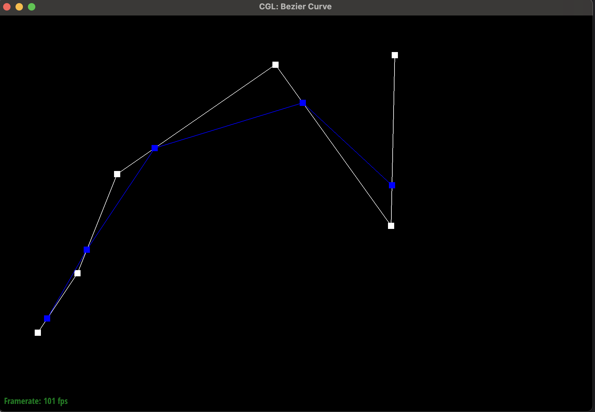
|
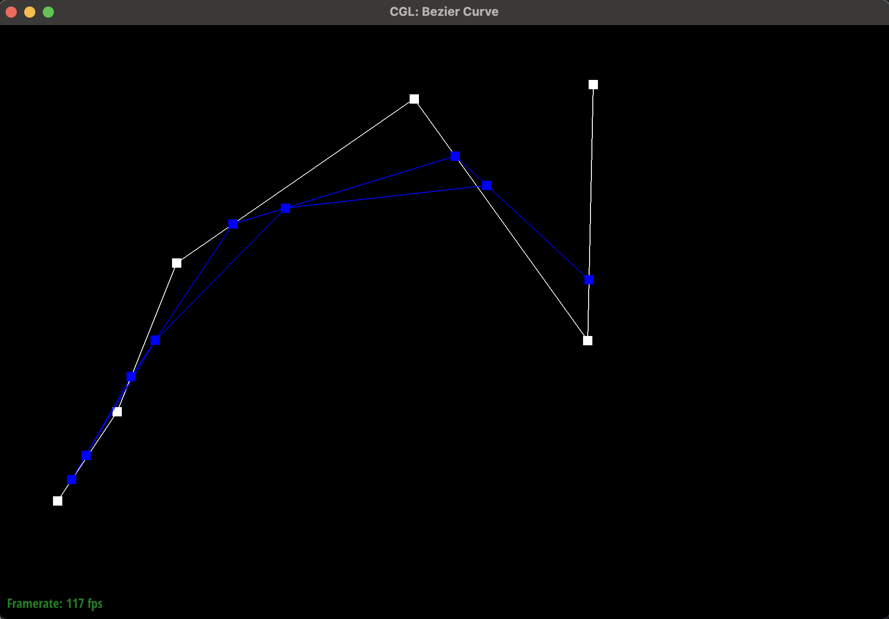
|

|

|
|
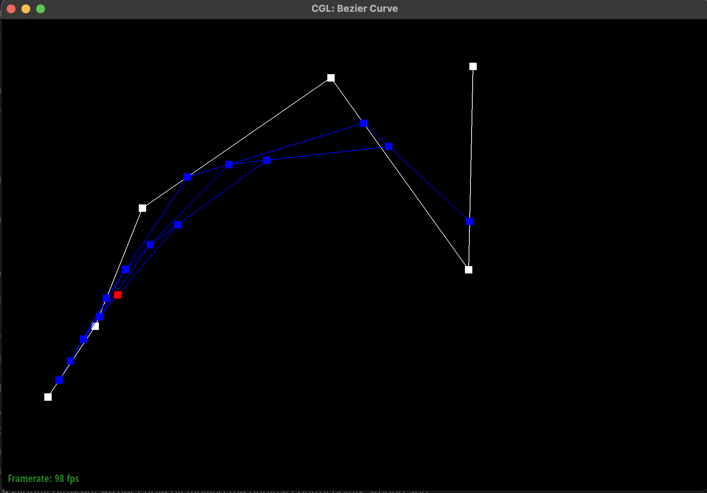
|

|

|
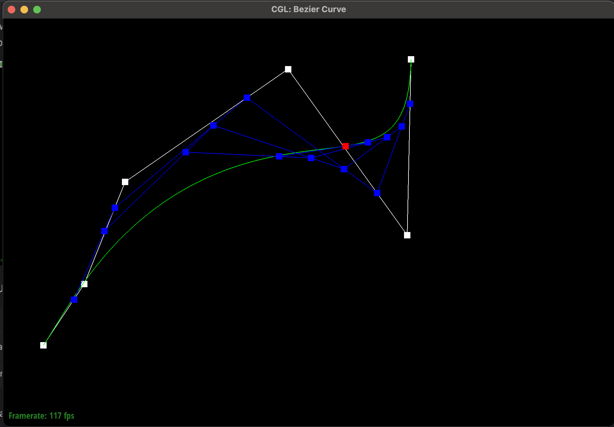
|

|
Part 2: Bezier surfaces with separable 1D de Casteljau
After implementing the simple, de Casteljau algorithm operating on points in 2 dimensions(x,y) space
to draw a line, we extended our approach in two meaningful ways:
-
Firstly, we wanted to be able to represent a line in 3-dimensional space with
(x,y,z)coordinates. This meant that we had to switch from using a Vector2D to a Vector3D data-structure. This required us to rewrite our logic from part 1 and extend the lerp functionality to the z-axis. - Secondly, we needed to create a 3D patch as our final output, instead of a single Bezier curve. This meant that we had to use our Bezier curves as an intermediate building block, where for a given value of T (now represented by U), we would have to evaluate many independent Bezier curves, creating a series of points which would serve as the new control points for a second degree Bezier curve to be evaluated at V. This allows for a grid of points (also called a patch) to be returned instead of a single line as was the case before.

|
Section II: Triangle Meshes and Half-Edge Data Structure
Part 3: Area-weighted vertex normals
For this part of the assignment we needed to compute the area-weighted vertex normal for a given vertex. This is very important so we can get a reliable estimate of each pixel's normal vector which is required for Phong shading. To do this, we performed the following:-
We need to have a reliable means of getting the complete fan of vertices which neighbor a given vertex. We
can accomplish this with the halfedge data structure where we can use
h->twin()->vertex()to get a neighboring vertex. When we callneighbor_vertex->next()we now get back to our original vertex and we can run the same call as above to get the next vertex in the fan. We want to run this process until we are back at the original halfedge that we started with. Once we are back where we started, we have successfully retrieved every neighboring vertex to a given starting vertex. -
While we are iterating through every neighboring vertex, we need to keep track of the previous neighboring
vertex that we just visited. Once we have a unique triplet of our original vertex, the previous vertex,
and the current vertex we can then subtract our original vertex from the previous vertex and the current
vertex to obtain two vectors.
We can then compute the cross product between the two vectors to create a new orthogonal normal vector whose
length is twice the area of the triangle spanned by the three vertices. Half of said vector gives us our
normal vector for
a given triangle (a face) connected to the center vertex.
Note that we respect winding order by taking
current_vertex - original_vertexas current vertex is the vertex that is guaranteed by the halfedge data structure to be counterclockwise to our original vertex. We also know that our original center vertex is counterclockwise to the previous vertex as the halfedge data structure returns the center vertex as the next vertex pointed to by said previous vertex. We then usecurrent_vertex - original_vertexas the first input to the cross product function. This guarantees that said product returns a vector that is normal to the front facing triangle. - Lastly, we need to sum up all the normal vectors that we create for each adjacent face to compute a single normal vector that represents said vertex. Each normal vector that we compute is weighted so we can just take half of each vector and sum them together to get a weighted average. After we have summed over all the normal vectors representing the neighboring triangles, we can normalize and return our final vector which is the area-weighted normal for a given vertex.

|

|

|

|
Part 4: Edge flip
To implement the edge flip we had to update the elements in the halfedge data structure to point to the right places.Specifically, we needed to update the vertices that a given edge pointed to so that it could be flipped. Luckily, flipping an edge does not add / remove any elements. That being said, this implementation was anything but simple.
There were many elements (vertices, halfedges, edges, and faces) that had to be reassigned and a single mistake could leave a dangling pointer which could break the mesh at a later point. Even more frustrating is that said issues may not arise immediately on the first edge flip, but could show themselves much later, after a few flips have occurred.
Therefore, a critical piece of debugging this function was to use the visual inspector to see what each half edge, face, vertex, and edge pointed to after each flip operation. It was also important to try several flip operations to reverse said changes and ensure that after 2 (or more) flips the elements were in their original (or equivalent) state.
Additionally, we took extra care to draw out sample triangles and painstakingly detailed what each element should do during the transformation. We then made sure to update every element in the flip step, including those elements that did not have their values changed. This was to make sure that we could see every state change that was occurring to allow us to make sure the final state matched our diagram.
There were a few small bugs on a few halfedges, however, the UI tool allowed us to inspect visually.
These processes ensured that we did not get too lost at this step.

|
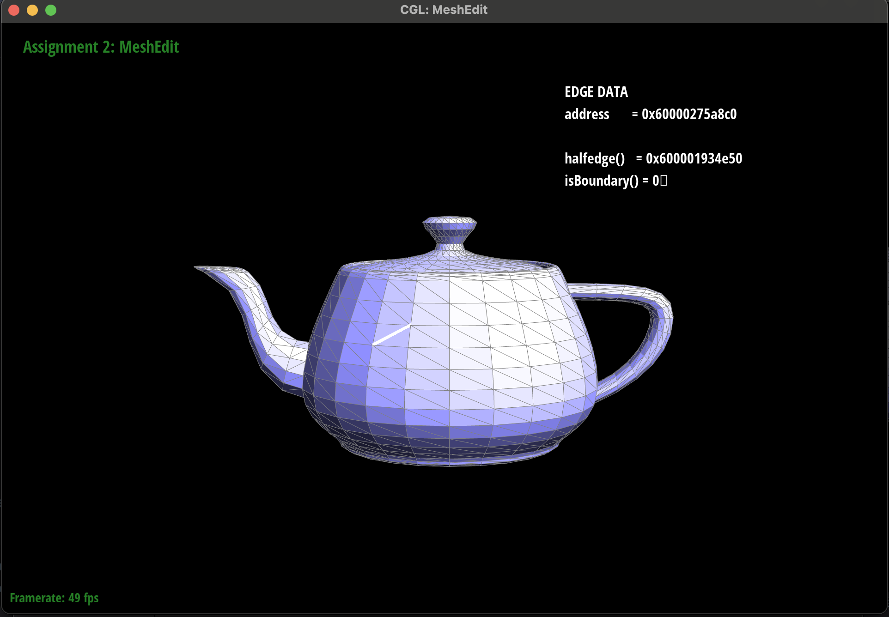
|

|

|
|
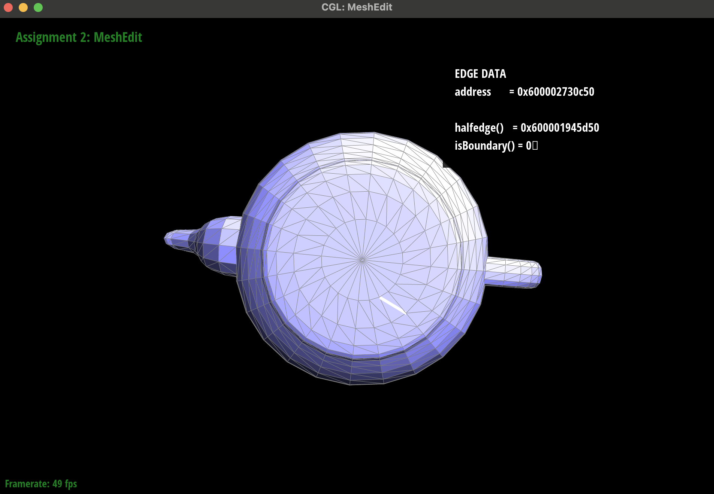
|
|
Part 5: Edge split
First, we began by hand-drawing the original mesh topology on paper, marking each halfedge, edge, vertex, and
face along with their key properties (connectivity pointers, face/edge references, etc.). Then, we sketched the
ideal result after an edge split: we added two new halfedges, one new edge, and the split vertex; partitioned
the original face into two smaller faces; and updated all the next, twin,
vertex, face, and edge pointers accordingly.
At first glance, our pencil sketch matched the textbook diagrams, so we dove straight into coding Task-6. Unfortunately, the first few runs produced malformed meshes: unexpected holes, dangling edges, and faces that did not close. In our implementation, some new halfedges were not correctly paired with twins, and a few face loops did not reconnect properly, causing triangles to go missing and boundary loops to collapse.

|

|
- Firstly, we had two halfedges that we did not update with our original implementation. This became very tricky to track down and caused our loop subdivision algorithm to wildly fail. We decided to manually implement a portion of the loop subdivision algorithm by hand over a small piece of the teapot where we would split each edge and then flip new edges which pointed to both a new and an old vertex. When we did this we noticed that the manual algorithm worked when we would split / flip from the top / left sides first. However, when we would split from the bottom / right sides, we would see the mesh become deformed. We then used ChatGPT and asked why this could be the case. It told us that we were most likely not updating one or more halfedges given that said error was highly dependent on the direction of the split / flip ordering. This was a great hint as it let us find the two needles in the proverbial haystack. We used the visual inspector and specifically looked for malformed halfedges after the degenerate split / flip combination and identified the issue. We lost track and forgot to set a few halfedges. Once we updated said values, we were able to get the manual, by hand, version of loop subdivision to work.
- This left one more sneaky bug. At this point, we knew that our split and flip operations worked as we were able to perform loop subdivision by hand. However, our automated loop subdivision output was horribly wrong. This gave us a hint that the issue must lie in which edges were getting flipped. The issue is that the loop subdivision algorithm ran so many iterations of split / flip operations that it was impossible to visually inspect and see what was going wrong (like we did in the previous steps / bugs). This took a long time to solve, but eventually we decided to reread the project scope and saw in the provided images one of our edges was incorrectly tagged as being new, as it was newly created, however, it was lying in the original path of an existing edge, and therefore it was not supposed to be new. This was a critical bug with the edge split code that was very hard to detect in the loop subdivision algorithm.

|
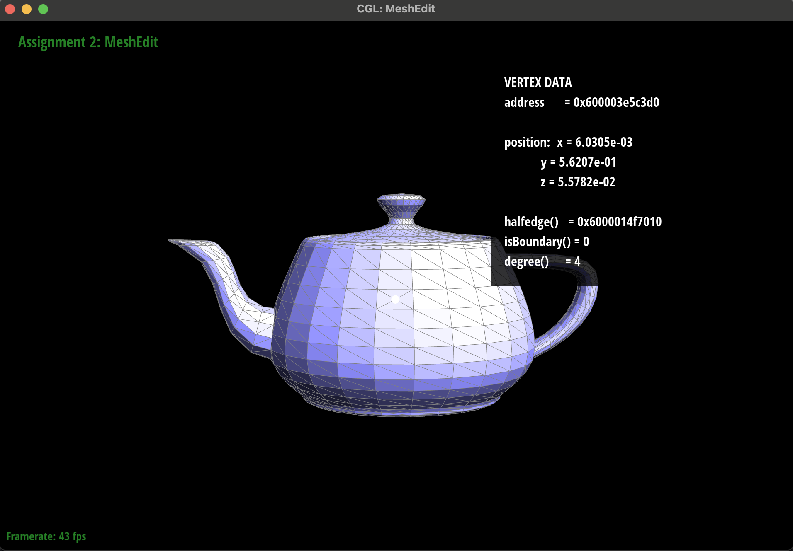
|

|
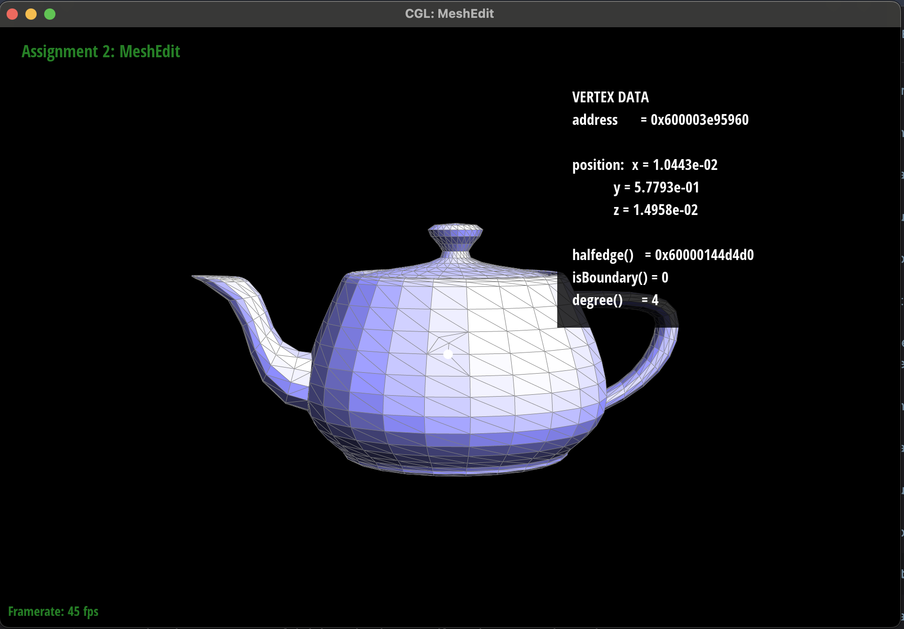
|
|
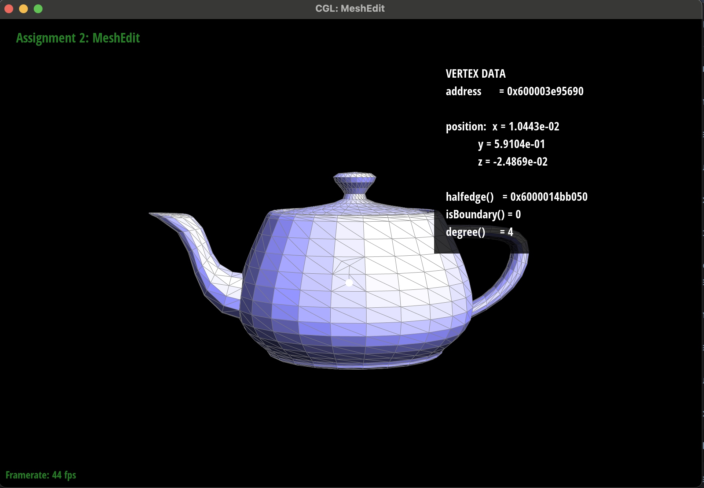
|

|

|

|
Part 6: Loop subdivision for mesh upsampling
First, we computed new positions for every original vertex: for each v we set v->isNew =
false, traversed its one-ring via h = v->halfedge() and h = h->twin()->next(),
summed neighbor positions, counted valence n, computed u = (n == 3 ? 3.0/16.0 :
3.0/(8.0*n)), and stored the result in v->newPosition.
Next, we updated edge-based positions: for each EdgeIter e, we identified its two endpoints
v0 and v1 plus the two opposite vertices v2 and v3, then
applied the four-point stencil e->newPosition = 3.0/8.0*(v0+v1) + 1.0/8.0*(v2+v3).
To prepare for splitting, we collected all original edges in a vector
, marking each e->isNew = false so we could iterate only over those originals. We then looped
over that snapshot, called mesh.splitEdge(e) on each, placed the returned vertex at e->newPosition,
ensured its halfedge pointed back to itself, and flagged newV->isNew = true.
After splitting, we refined the triangulation by flipping: we scanned every edge in the mesh and flipped those
with e->isNew == true that connected exactly one new and one original vertex, using mesh.flipEdge(e)
to improve triangle quality.
Finally, we finalized the subdivision by copying each v->newPosition back into
v->position, yielding the smoothly upsampled mesh.
During development, we relied heavily on the isNew flags to control splitting and flipping, used a
pre-split edge snapshot to avoid infinite loops, and added assertion checks on face loops and twin pairs to
catch pointer errors early.
You can see in the images below that loop subdivision rounds sharp corners and can distort the overall geometry of the shape if the topology is not balanced. The cube is a great example showcasing both of these attributes of loop subdivision. You can see in the first set of cube subdivisions, the shape becomes irregular and becomes slightly longer at the vertices where the original edge was not present. We were able to fix this by adjusting the topological mesh structure of the cube by manually splitting all edges so that every vertex had the name degree. Once this was complete, we split that cube and the final shape was much more even. You can see all the images attached of both cubes + subdivisions. We also attached some of the other objects with their appropriate subdivisions.
You can see in the two images at the bottom with the irregularly split cube, that the vertex locations are noticeably better preserved than in the versions of the subdivided cube with fewer edge splits prior to subdivision. This is because having a greater number of edges prior to subdivision means that each triangle is smaller and therefore each old vertex can move less in the readjustment phase of subdivision. You will see that the overall shape may be strange for these cubes, but this reflects the random nature of the splits that we performed.
|
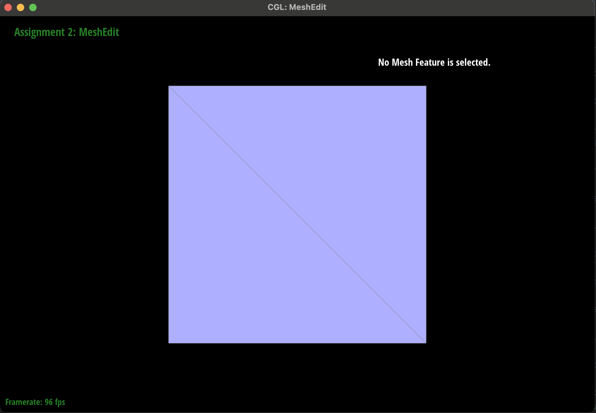
|

|

|

|

|

|
|
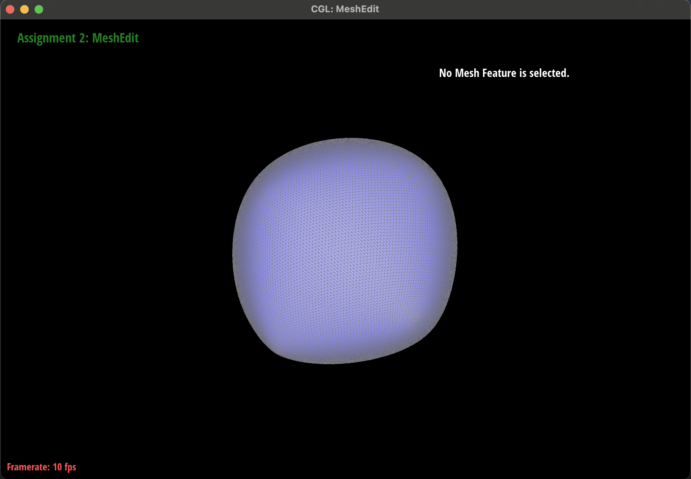
|
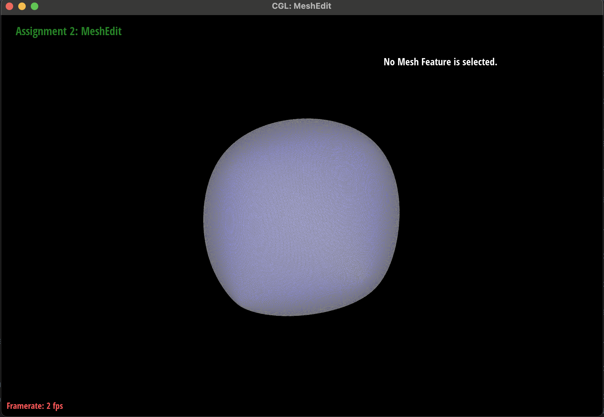
|
|
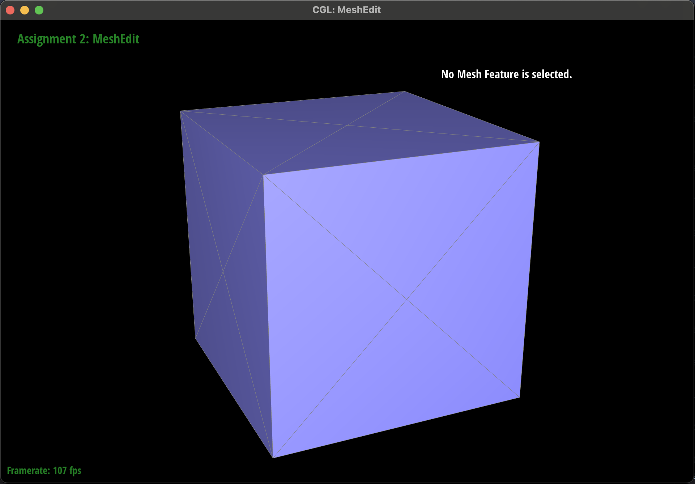
|

|

|

|

|

|

|

|

|

|
|
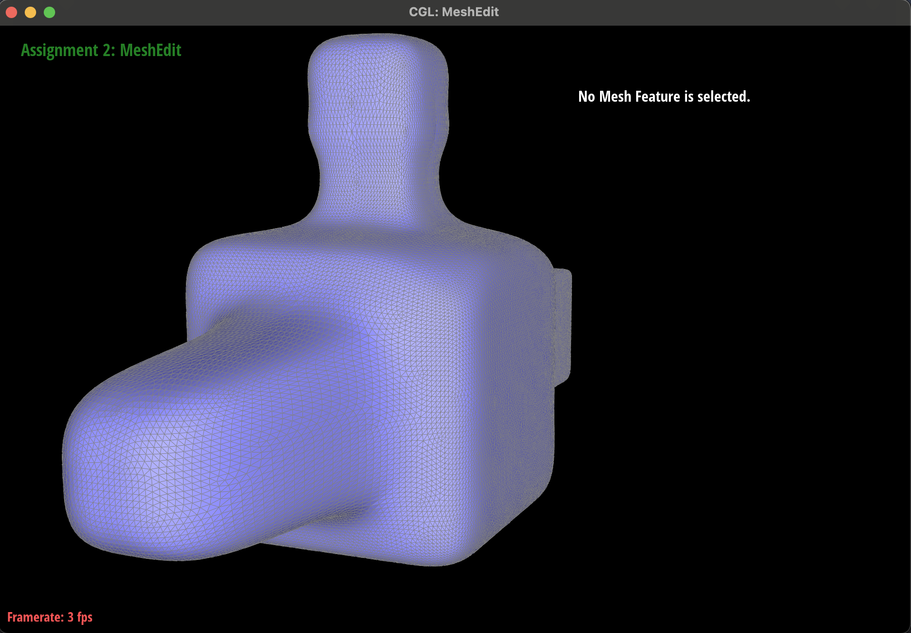
|
|
|
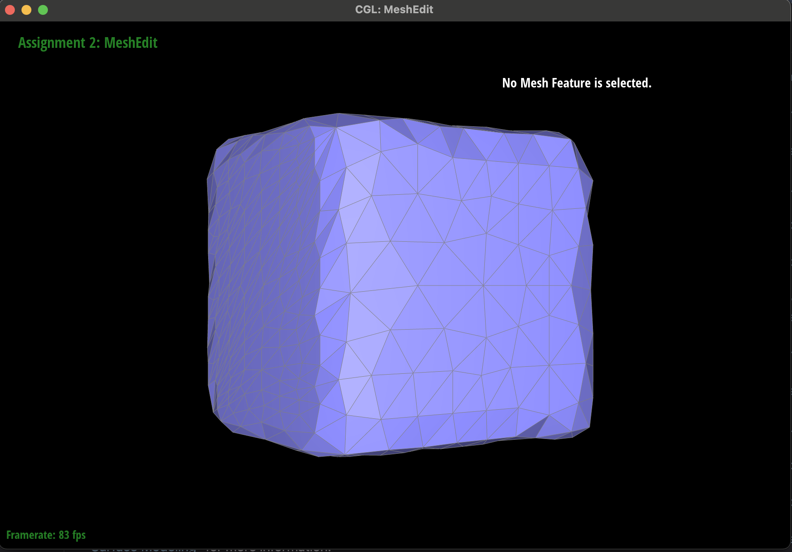
|

|